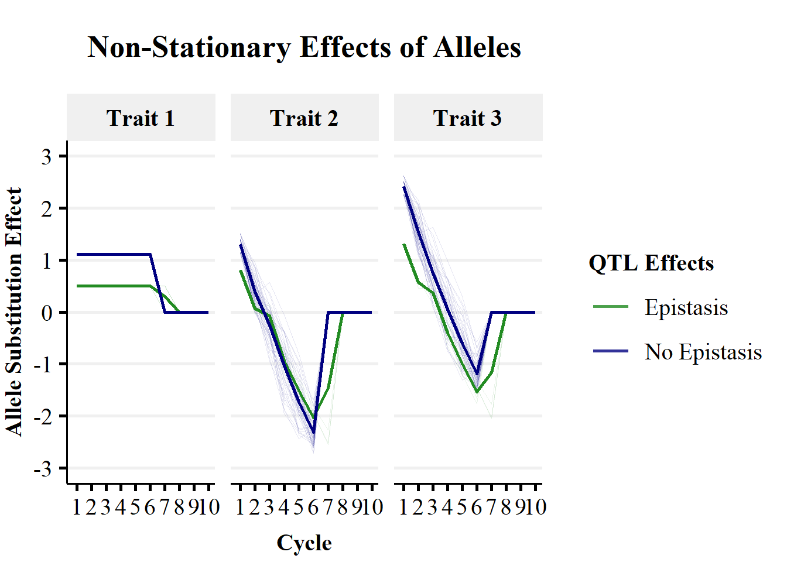

Simulation Of non-Stationary Effects of Alleles Over Breeding Cycles
Owen Powell
28/01/2021
Last updated: 2021-02-03
Checks: 7 0
Knit directory: Interactions_In_Breeding/
This reproducible R Markdown analysis was created with workflowr (version 1.6.2). The Checks tab describes the reproducibility checks that were applied when the results were created. The Past versions tab lists the development history.
Great! Since the R Markdown file has been committed to the Git repository, you know the exact version of the code that produced these results.
Great job! The global environment was empty. Objects defined in the global environment can affect the analysis in your R Markdown file in unknown ways. For reproduciblity it’s best to always run the code in an empty environment.
The command set.seed(20210202) was run prior to running the code in the R Markdown file. Setting a seed ensures that any results that rely on randomness, e.g. subsampling or permutations, are reproducible.
Great job! Recording the operating system, R version, and package versions is critical for reproducibility.
Nice! There were no cached chunks for this analysis, so you can be confident that you successfully produced the results during this run.
Great job! Using relative paths to the files within your workflowr project makes it easier to run your code on other machines.
Great! You are using Git for version control. Tracking code development and connecting the code version to the results is critical for reproducibility.
The results in this page were generated with repository version 29fc01a. See the Past versions tab to see a history of the changes made to the R Markdown and HTML files.
Note that you need to be careful to ensure that all relevant files for the analysis have been committed to Git prior to generating the results (you can use wflow_publish or wflow_git_commit). workflowr only checks the R Markdown file, but you know if there are other scripts or data files that it depends on. Below is the status of the Git repository when the results were generated:
Ignored files:
Ignored: .Rhistory
Ignored: .Rproj.user/
Untracked files:
Untracked: data/ASE_Trait1.rds
Unstaged changes:
Modified: .Rprofile
Modified: .gitattributes
Modified: .gitignore
Modified: Interactions_In_Breeding.Rproj
Modified: README.md
Modified: _workflowr.yml
Modified: analysis/_site.yml
Modified: analysis/about.Rmd
Modified: analysis/index.Rmd
Modified: analysis/license.Rmd
Modified: code/README.md
Modified: data/README.md
Modified: output/README.md
Note that any generated files, e.g. HTML, png, CSS, etc., are not included in this status report because it is ok for generated content to have uncommitted changes.
These are the previous versions of the repository in which changes were made to the R Markdown (analysis/NonStationaryEffects_Example.Rmd) and HTML (docs/NonStationaryEffects_Example.html) files. If you’ve configured a remote Git repository (see ?wflow_git_remote), click on the hyperlinks in the table below to view the files as they were in that past version.
| File | Version | Author | Date | Message |
|---|---|---|---|---|
| Rmd | 29fc01a | powellow | 2021-02-03 | Publish the scripts, data & files for the non-stationary effects of alleles |
Summary
The presence of genetic interactions can result in changes in allele substitution effects over breeding cycles. We refer to these changes in allele substitution effects as non-stationary effects of alleles. We provide a simple simulation to demonstrate the presence of non-stationry effects of alleles and their implications for using genomic predcition between component and endpoint traits in plant breeding.
The simulation is broken down into 3 steps:
- Simulate the initial Reference Population of Genotypes (RPG):
- 10 quantitative trait loci (QTL)
- Starting alle frequency of 0.2
- Approximately at Linkage Equilibrium (LE)
- Simulate causal loci (QTL) effects for 3 traits of interest & visualise interactions between QTL:
- 3 correlated traits, determined by 10 pleiotropic QTL.
- Trait 1: additive QTL effects only.
- Trait 2: additive, dominance & epistasis QTL effects.
- Trait 3: Sum of Trait 1 and Trait 2 phenotypes, i.e. no direct QTL effects.
- Breeding Simulation:
- 1000 individuals per generation.
- Select 100 individuals as parents on true genetic value of Trait 1.
- Random Crossing with 10 offspring per cross.
- Estimate allele substitution effects for the 10 QTL across all three traits.
- Estimate genetic mean and genetic variance for all three traits.
The first two steps were only run once at the start of the simulation to establish the initial RPG and underlying genetic architecture of the traits. The third step, the Breeding Simulation, was replicated 5 times from the common RPG and genetic architectures.
Initial Reference Population of Genotypes
In this example, we will use AlphaSimR to simulate the initial Reference Population of Genotypes (RPG). However, the functions used in this workflow will work with any matrix of genotypes. So try with your favoured genetic simulation tool if you wish.
Specify Simulation Parameters
To generate the RPG with AlphaSimR, we need to specify some parameters:
### Reference Population of Genotypes (RPG) & Genome ----
n_founders=1000 #Change this value to show effect of sampling on covariance/LD between QTL
n_qtl=1
n_chr=10
start_allele_freq = 0.8
n_traits = 3
### QTL Effects ----
add_qtl_effect_focal =
add_qtl_effect_background =
dom_qtl_effect_focal =
dom_qtl_effect_background =
epi_qtl_effect_focal =
epi_qtl_effect_background =
### Simulation Parameters ----
n_reps = 5
trait = 1
n_cycles = 20
nIndSel = 100
nCrosses = 100
nProgeny = 10
selection = "genotypic_values"Simulate Genomes
In this example, we will use AlphaSimR to simulate the initial Reference Population of Genotypes (RPG). However, the functions used in this workflow will work with any matrix of genotypes. So try with your favoured genetic simulation tool if you wish.
To provide flexibility for more complicated epistatic interactions and trait relationships this simulation is done partially outside of AlphaSimR. AlphaSimR will be used to generate genotypes, track recombination, selection, crossing, etc. While, bespoke scripts will be used to specify qtl effects, qtl interactions and trait interactions, as well as calculating trait genetic values and phenotypes.
To simulate our initial RPG, we use AlphaSimR to generate and store the simulation parameters. This creates ‘empty slots’ which can be filled with our genotypes and trait values gnerated outside of AlphaSimR with out bespoke scripts. The hapsim package is then used to sample the initial haplotyeps for 1000 individuals, with an allele frequency of 0.2 at all 10 qtl. The re-sampled haplotypes are then read back into AlphaSimR to form our initial RPG.
### Simulate Trait 1 ---
# Simulate our Reference Population of Genotypes (RPG) ----
founderPop = quickHaplo(nInd=n_founders,
nChr=n_chr,
segSites=n_qtl,
inbred=FALSE)
SP = SimParam$new(founderPop) #Store Simulation Parameters
SP$addTraitA(n_qtl,mean=10,var=3)$setVarE(h2=1.0) #This step is required to allow us to extract the RPG genotypes (line 84) . We will not use this trait info in the simulation
# Convert RPG into AlphaSimR Population ----
source("./code/HapSim.R")
founderPop = newMapPop(genMap = genMapRep,haplotypes)
RPG = newPop(founderPop)
# Extract QTL Genotypes of the RPG ----
genos = pullQtlGeno(RPG) # Extract QTL genotypes
genos <- genos %>% as_tibble() #get genotypes into tidyverse formatExamine Genotype Structure of Reference Population of Genotypes
In this example we have sampled the genotypes of the RPG with an expectation of Linkage Equilibrium (LE). However, departures from LE can be generated by sampling error. Sampling error can be influenced by:
- The size of the RPG.
- The co-location of QTL.
Therefore, its important to visualise the covariance between the QTL genotypes in the simulated RPG.
### Estimate covariance between QTL in RPG ----
covar_genos <- cov(genos) %>% as.tibble()
### Reformat Dataframe for Plotting
heatmap <- covar_genos %>% gather(Primary_QTL,CoVariance) %>%
mutate(Primary_QTL = factor(Primary_QTL,levels=paste("QTL",c(1:(n_qtl*n_chr)),sep="_")),
Secondary_QTL = rep(unique(Primary_QTL),times=length(unique(Primary_QTL)))) %>%
relocate(Primary_QTL,Secondary_QTL,CoVariance) %>%
mutate(Norm_CoVariance = (CoVariance - min(CoVariance))/(max(CoVariance)-min(CoVariance))) #formatted dataframe to plot heatmaps
### Plot Heatmap ----
heatmap %>%
ggplot(aes(y=Primary_QTL,x = Secondary_QTL, fill=CoVariance)) +
geom_tile() +
geom_text(aes(label = round(CoVariance, 2))) +
scale_fill_distiller(palette = "RdBu",direction = 1,limits=c(-1,1)) +
theme_pubclean() +
theme(legend.position = "right",plot.title = element_text(hjust = 0.5)) +
ggtitle("Co/Variance Matrix of QTL Genotypes in Initial RPG") 
The heatmap above, shows zero and small non-zero values in the off-diagonal elements. Therefore, there is minimal covariance between the simulated QTL. The minimal covariance between the QTL shows us that our reference population of genotypes is at approximate Linkage Equilibrium.
Genetic Architecure of the Traits
We estimated the genetic effects of the 10, pleiotropic QTL following a combination of the “Gene’s Eye View” approach from Wade 2002 and Cheverud & Routman 1995. The “Gene’s Eye View” approach looks at changes in phenotype of the three genotype classes (ie AA, Aa, aa) of a single QTL as a function of changes in the genetic background, i.e the allele frequencies at all other QTL. In our example QTL 1 was chosen as our ‘Focal’ QTL. QTL 2 to 10 were considered ‘Background’ QTL. ‘Background’ QTL were assigned the same genetic effects and can be viewed as replicates of the same QTL. Phenotypes for the three traits were taken from a previous simulation, Cooper et al. 2020. All QTL were pleitropic to honestly simulate the underlying genetics of the multitrait network, although the QTL had different magnitudes of effects across the three traits. The parameterisation of QTL effects resulted in:
- 3 correlated traits, determined by 10 pleiotropic QTL.
- Trait 1: additive QTL effects only.
- Trait 2: additive, dominance & epistasis QTL effects.
- Trait 3: Sum of Trait 1 and Trait 2 phenotypes, i.e. no direct QTL effects.
See how the additive and dominance genetic effects for the ‘Focal’ and ‘Background’ QTL were simulated below:
# Resample QTL Effects outside AlphaSimR ----
# Additive ----
# Trait 1
qtl_effects_Trait1 = c(0.5,rep((10/(n_qtl*n_chr-1)),times=((n_qtl*n_chr)-1)));
qtl_effects_Trait1 = as.matrix(qtl_effects_Trait1) # Simulate additive QTL effects
# Trait 2
qtl_effects_Trait2 = c(-0.167,rep((-2/((n_qtl*n_chr)-1)),times=((n_qtl*n_chr)-1)));
qtl_effects_Trait2 = as.matrix(qtl_effects_Trait2) # Simulate additive QTL effects
# Dominance ----
# Trait 1
dom_qtl_effects_Trait1 = rep(0,times=(n_qtl*n_chr));dom_qtl_effects_Trait2 = as.matrix(dom_qtl_effects_Trait1) # Simulate Dominance QTL effects
# Trait 2
dom_qtl_effects_Trait2 = c(0,rep((20.5/((n_qtl*n_chr)-1)),times=((n_qtl*n_chr)-1)));
dom_qtl_effects_Trait2 = as.matrix(dom_qtl_effects_Trait2) # Simulate Dominance QTL effectsSimulation of epistasis, i.e. between QTL interactions, is a little more tricky. The interaction matrix is supplied as the input into the per_locus_interaction() function which calculates the interaction deviation for each of the 9 two locus genotye classes. However, we want to encode a specifc network using previously estimated effects. Therefore we will manually create the 3x3 interaction deviation matrices for each QTL-QTL interaction. The 3x3 QTL interaction matrices can specified directly in R, or specified in Excel and loaded in.
# Epistasis ----
# A non-zero value in a cell of the matrix represents the presence of an interaction **AND** the mean of the distribution from which interaction deviations are sampled.
# interaction matrix from Excel ----
# interaction_matrix <- read.table(file="Interaction_Matrix_Quadratic.csv",sep=",",header=T,row.names=1,check.names = T)
### Interaction matrices in R ----
#Specify Presence/Absence of Genetic Interactions
# Trait 1
interaction_matrix_trait1 <- matrix(0,(n_qtl*n_chr),(n_qtl*n_chr));
interaction_matrix_trait1 <- interaction_matrix_trait1 %>% as.tibble()
names(interaction_matrix_trait1) <- paste("QTL",c(1:(n_qtl*n_chr)),sep="_")
row.names(interaction_matrix_trait1) <- paste("QTL",c(1:(n_qtl*n_chr)),sep="_")
# Trait 2
interaction_matrix_trait2 <- matrix(0,(n_qtl*n_chr),(n_qtl*n_chr)); interaction_matrix_trait2[1,c(2:(n_qtl*n_chr))] <- 1
interaction_matrix_trait2 <- interaction_matrix_trait2 %>% as.tibble()
names(interaction_matrix_trait2) <- paste("QTL",c(1:(n_qtl*n_chr)),sep="_")
row.names(interaction_matrix_trait2) <- paste("QTL",c(1:(n_qtl*n_chr)),sep="_")
### Identify & Summarise QTL interactions for Trait 2
#Identify Genetic Interactions
n_interactions = length(which(interaction_matrix_trait2!=0))
# Specify Magnitude of Genetic Interactions
interaction_trait2 <- matrix(data = c(-0.204,-0.037,0.241,0,0,0,0.204,0.037,-0.241),nrow=3,ncol=3,byrow=T)
# Summarise Genetic Interactions
per_locus_interaction_trait2 <- lapply(seq_len(n_interactions), function(X) interaction_trait2)
interactions_trait2 <- summarise_interactions(interaction_matrix_trait2,per_locus_interaction_trait2) # if this throws up an error check for dplyr/plyr incompatibilityVisualise the Interactions
When the number of QTL and interactions is small, a correlation plot or matrix is an easy way to visualise the presence and magnitude of interactions. The QTL the top of the plot are providing the epistatic effect, while the QTL along the diagonal are receiving the epistatic effect. In this case, QTL 2 to 10 all have an epistatic effect on the value of QTL 1.
Trait 1
#Visualise QTL Interactions as Correlation Plots for Trait 1 & Trait 2 ----
qtl_incidence_matrix_trait1 <- corrplot(as.matrix(interaction_matrix_trait1),method="circle",type="upper") #no interactions specified - so plot should be empty
Trait 2
qtl_incidence_matrix_trait2 <- corrplot(as.matrix(interaction_matrix_trait2),method="circle",type="upper")
However, matrices becomes problematic when visualsing a large number of QTL and interactions. large numbers of QTL interactions can be visualised as networks for easier interpretation. QTL are represented by the ‘nodes’, and the interactions are represented by the ‘edges’.
- The colour of the ‘edge’ indicates the sign of mean interaction deviation.
- The size of the ‘edge’ indicates the magnitude of interaction genetic variance of the interaction.
#create QTL nodes
nodes_trait2 <- cbind(qtl = seq(1,(n_qtl*n_chr)),additive_effect_size = qtl_effects_Trait2, trait = rep("Trait2",n_qtl*n_chr)) %>% as.tibble() %>% rename(additive_effect_size = V2)
#create epistatic edges
graph_trait2 <- interactions_trait2 %>% unnest() %>% tbl_graph(nodes = nodes_trait2, edges =. , directed = TRUE)
graph_trait2 %>%
activate(edges)
#create network plot
qtl_network_trait2 <- ggraph(graph_trait2,layout = "circle") +
geom_edge_link(aes(width=interaction_variance,alpha=0.2,colour=average_interaction_sign)) +
scale_edge_width(range = c(0.1, 2)) +
geom_node_point(aes(size=additive_effect_size,label=qtl)) +
geom_node_label(aes(label=qtl)) +
theme_graph() + theme(legend.position = "none")
qtl_network_trait2
We now need to store the genetic architectures of the different traits into a dataframe that can be accessed and added to throught the simulation.
# Create Genetic Architecture Object ----
library(naniar)
genetic_architecture <- gen_architecture(1,additive_effects=qtl_effects_Trait1,append=F) # Trait 1
genetic_architecture <- gen_architecture(2,additive_effects=qtl_effects_Trait2,
dominance_effects=dom_qtl_effects_Trait2,interaction_effects = interactions_trait2,
append=T,genetic_architecture) # Append Trait 2
qtl_effects_Trait3 = as.matrix(rep(0,length(genetic_architecture$Primary_QTL)))
genetic_architecture <- gen_architecture(3,additive_effects=qtl_effects_Trait3,append=T,
gen_architecture=genetic_architecture) # Append Trait 3Calculate True Genetic Values for Component Traits
Finally, to estimate genetic values we need to set the relationship between our component traits (Traits 1 & 2) with our endpoint trait (Trait 3). In this example, we are going to keep it simple and specify the following relationship:
\(Trait 3 = Trait 1 + Trait 2\)
# Simulate Total Genotypic Values for the Reference Population of Genotypes ----
# Trait 1 ----
start_time = Sys.time()
RPG_Trait_Data <- calc_GV(RPG@id,genos,qtl_effects_Trait1,dominance_present=F,
interactions_present=F,effects=TRUE,trait=1,append=F)
stop_time = Sys.time()
run_time = stop_time - start_time; print(run_time)
# Trait 2 ----
start_time = Sys.time()
### externally supplied Genos - incompatibility with select()
RPG_Trait_Data <- calc_GV(RPG@id,genos,qtl_effects_Trait2,dominance_present=T,
dom_qtl_effects_Trait2,interactions_present=T,
interactions_trait2,effects=TRUE,
population=RPG_Trait_Data,trait=2,
append = TRUE)
stop_time = Sys.time()
run_time = stop_time - start_time; print(run_time)
# Trait 3 ----
start_time = Sys.time()
### externally supplied Genos - incompatibility with select()
RPG_Trait_Data <- calc_GV_EPT(RPG_Trait_Data,1,2,3)
stop_time = Sys.time()
run_time = stop_time - start_time; print(run_time)Looking at the code chunks, above, we can see that we’ve simulated:
- 1000 individuals with genotypes
- 10 Chromosomes
- 1 causal locus (QTL) per Chromosome for our traits of interest.
- Sampled the genetic effects of 10 QTL across the genome.
- additive
- dominance
- epistasis
The individuals and their genotypes are stored in the RPG object. The data on all three traits for our refernce population of genotypes is stored in the RPG_Trait_Data object. The qtl id’s and effects are stored in the genetic_architecture object.
Stochastic Genetic Simulation
So far we have simulated a reference population of genotypes, genetic architecure and data on three traits. Now we able to simulate selection on a trait of interest, and track the correlated response on other traits.
Key Parameters of the Breeding Simulation:
- 1000 individuals per generation.
- Select 100 individuals as parents on true genetic value of Trait 1.
- Random crossing with 10 offspring per cross.
- Estimate allele substitution effects for the 10 QTL across all three traits.
- Estimate genetic mean and genetic variance for all three traits.
The specific parameters of the breeding simulation can be altered in the Simulation_Parameters.R file. The breeding simulation was replicated 5 times with a single, common RPG and trait genetic architectures.
#Create Empty Lists & DataFrame to store Simulation Output
RPG_Trait <- vector(mode = "list", length = n_cycles)
ASR_RPG <- vector(mode = "list", length = n_cycles)
RPG_parents <- vector(mode = "list", length = n_cycles)
trait_results = data.frame(cbind(rep=rep(NA,1),cycle = rep(NA,1),trait = rep(NA,1),GV_Mean=rep(NA,1),GV_Variance=rep(NA,1)))
population_results <- vector(mode = "list", length = n_reps)
RPG_Trait[[1]] <- RPG_Trait_Data
ASR_RPG[[1]]<- RPG
#Breeding Loop
for (rep in (1:n_reps)){
population_results[[rep]] <- genetic_architecture
for(cycle in 1:n_cycles){
if(cycle>1){
#Truncation Selection of Parents (outside AlphaSimR)
RPG_parents[[cycle-1]] <- select_parents(trait_object = RPG_Trait[[cycle-1]],nInd = nIndSel,selection_criteria=selection,trait = trait)
#Identify Selected Parents in AlphaSimR
ASR_RPG_parents <- select_ASR(RPG_parents[[cycle-1]],ASR_RPG[[cycle-1]])
genos <- pullQtlGeno(ASR_RPG_parents)
#Random Crossing of Parents
ASR_RPG[[cycle]] <- randCross(ASR_RPG_parents,nCrosses,nProgeny)
}
genos = pullQtlGeno(ASR_RPG[[cycle]]) # Extract QTL genotypes
genos <- genos %>% as.tibble() #get genotypes into tidyverse format
#Calculate per Allele Selection Coefficients & Fitness
population_results[[rep]] <- s_hat_function(genos) %>%
select(-QTL) %>%
bind_cols( population_results[[rep]],.) %>%
nest(-c(Primary_QTL,contains("trait"),contains("generation"))) %>%
rename_with(.fn = ~paste0("generation", cycle), .cols = "data")
# Calculate Genetic Values for Trait 1
RPG_Trait[[cycle]] <- calc_GV(ASR_RPG[[cycle]]@id,genos,non_epistatic_qtl_effects=qtl_effects_Trait1,
dominance_present=F,interactions_present=F,effects=TRUE,trait=1,append=F)
# Calculate Genetic Values for Trait 2
RPG_Trait[[cycle]] <- calc_GV(RPG_Trait[[cycle]]$id,genos,qtl_effects_Trait2,dominance_present=T,
dom_qtl_effects_Trait2,interactions_present=T,interactions_trait2,effects=TRUE,
population=RPG_Trait[[cycle]],trait=2,append = TRUE)
# Calculate Genetic Values for Trait 3
RPG_Trait[[cycle]] <- calc_GV_EPT(RPG_Trait[[cycle]],1,2,3)
for (trait_number in 1:n_traits){
#Extract Trait Genetic Values and Sub-components
trait_values <- map(RPG_Trait,function(x) transpose(simplify_all(x[[paste0("trait",trait_number)]])))
trait_values <- map(trait_values,function(x) if(length(x)==5){
set_names(x,nm=c("additive_values","dominance_values","non_epistatic_values","epistatic_values","genotypic_values"))})
### Calculate Trait Parameters
genotypic_values <- trait_values[[cycle]]$genotypic_values
gv_mean <- mean(genotypic_values)
gv_variance <- var(genotypic_values)
cycle_trait_results <- cbind(rep = rep ,cycle = cycle, trait = trait_number,GV_Mean = gv_mean,GV_Variance = gv_variance)
trait_results = rbind(trait_results,cycle_trait_results)
### Calculate Population Parameters
# Set Genetic Values as Phenotype
geno <- pullQtlGeno(ASR_RPG[[cycle]]) - 1
genotypic_values <- map(seq_along(trait_values),function(x) trait_values[[x]]$genotypic_values)
pheno <- as.matrix(genotypic_values[[cycle]])
# Calculate Allele Frequency Changes from 1st Cycle to Current Cycle of Selection
pop <- ASR_RPG[1:cycle]
all_freq <- map(pop,function(x) colMeans(pullQtlHaplo(x))) %>%
as.tibble(.name_repair = "unique") %>% t()
all_freq_change <- sweep(all_freq,2,all_freq[1,]); all_freq_change <- all_freq_change[cycle,]
tmp_locus_estimates <- population_results[[rep]] %>%
unnest(.,paste0("trait",trait_number
))
# Calculate Per Locus Response to Selection
tmp_locus_estimates <- Rhat_func(geno = geno,pheno = pheno, all_freq_change = all_freq_change,spread = T,plot=T) %>%
select(-QTL) %>%
bind_cols(tmp_locus_estimates,.) %>%
nest(-c(Primary_QTL,contains("trait"),contains("generation"),contains("effects"),contains("info"),contains("cycle"))) %>% #collapse new locus estimate columns into a list column
rename_with(.fn = ~paste0("cycle", cycle), .cols = "data") #rename this list column after the current breeding cycle
#Reformat Data into original structure with updated results
traits = c(1:n_traits)
population_results[[rep]] <- tmp_locus_estimates %>%
nest(-c(Primary_QTL,paste0("trait",c(traits[!traits%in%trait_number])),contains("generation"))) %>%
rename_with(.fn = ~paste0("trait", trait_number), .cols = "data")
}
}
}The simulation output needs to be reformatted, processed and within and across replicate metrics needs to be calculated. I wont bore you with the details here, but the code can be found here.
Plot Results
To recreate Figure 2 in the manuscript we need to load the processed data on:
- Trajectories of the predicted and true genetic values for the 3 traits:
- Trajectories of allele frequencies of the 10, pleiotropic QTL:
- Epistasis
- No Epistasis
- Trajectories of allele substitution effects of the 10, pleiotropic QTL for the 3 traits:
- Epistasis
- No Epistais
The first step is to load the processed data.
genetic_trend = readRDS(file="./output/Trait_Trajectory_Plot_Data.rds")
allele_freq = readRDS(file="./output/QTL_Trajectory_Plot_Data.rds")
ase = readRDS(file="./output/ASE_Trajectory_Plot_Data.rds")Plot Trajectories of Genetic Values
genetic_trend$Trait <- as.factor(genetic_trend$Trait)
genetic_trend$Rep <- as.factor(genetic_trend$Rep)
genetic_trend$Selection <- as.factor(genetic_trend$Selection)
GV <- ggplot(genetic_trend,aes(x=Cycle,y=Per_Rep_GMean, group = interaction(Rep,Trait,Selection),colour = Trait,lty = Selection)) +
geom_line(aes(x=Cycle,y=Per_Rep_GMean, colour = Trait,lty = Selection),
size=0.1,alpha = 0.3) + #Within Rep Genetic Trend
geom_line(aes(x=Cycle,y=Overall_Genetic_Mean, colour = Trait, lty = Selection),
size=1,alpha = 0.8) + #Across Rep Genetic Trend
guides(alpha = FALSE) +
theme(
panel.grid.major = element_blank(),
panel.grid.minor = element_blank(),
panel.background = element_blank(),
axis.line = element_line(colour = "black"),
axis.title = element_text(size = rel(1.5)),
axis.text = element_text(size = rel(1.25)),
) +
scale_linetype_manual(values=c("dashed","solid")) +
scale_x_continuous("Cycle",breaks = seq(1,10,1),limits = c(0.8, 11)) +
scale_y_continuous("Genetic Value", breaks = seq(-10,50,10),limits = c(-10, 50)) +
ggtitle(paste0("Trait Trajectories")) + theme_Publication() + scale_color_viridis_d(begin=0,end=1)
Figure 2a demonstrates the impact of non-stationary effects of alleles on the genetic trend over breeding cycles. Figure 2a plots the trends in predicted mean genetic value (dashed lines) versus the realised genetic value (solid lines) over 10 cycles of selection on true genetic value. The predictions were calculated as the cumulative sum of allele substitution effects of the 10 QTL controlling the traits. The allele substitution effects were estimated in the 1st selection cycle, for each trait separately, with an additive RRBLUP model. As the RRBLUP model was supplied with true genetic values, the difference between the predicted and true genetic trends are due to changes in the contributions of non-additive genetic effects to allele substitution effects over breeding cycles. The RRBLUP model was not updated over cycles of selection, so that changes the non-stationary effects of alleles could not be captured by the genetic correlations between traits.
Plot Trajectories of Allele Frequencies
allele_freq$Cycle <- as.numeric(allele_freq$Cycle)
allele_freq$QTL <- as.factor(allele_freq$QTL)
allele_freq$`QTL Effects` <- as.factor(allele_freq$`QTL Effects`)
allele_freq$Rep <- as.factor(allele_freq$Rep)
colorVec = c("forestgreen","navyblue")
AF <- ggplot(allele_freq,aes(x=Cycle,y=p, group = interaction(Rep,QTL))) +
geom_line(aes(x=Cycle,y=p, colour=`QTL Effects`),
size=0.1,alpha = 0.1) +
geom_line(aes(x=Cycle,y=all_freq_plot_data$avg_all_freq, colour=`QTL Effects`),
size=1,alpha = 0.8) +
guides(alpha = FALSE) +
theme(
panel.grid.major = element_blank(),
panel.grid.minor = element_blank(),
panel.background = element_blank(),
axis.line = element_line(colour = "black"),
axis.title = element_text(size = rel(1.5)),
axis.text = element_text(size = rel(1.25)),
) +
scale_x_continuous("Cycle",breaks = seq(1,10,1),limits = c(0.8, 10)) +
scale_y_continuous("Allele Frequency", breaks = seq(0,1,0.2),limits = c(0, 1)) +
ggtitle("QTL Trajectories") + theme_Publication() + scale_colour_manual(values = colorVec)
Figure 2b demonstrates the impact of non-stationary effects of alleles on the change in QTL allele frequencies over breeding cycles. Figure 2b plots the trends in mean allele frequencies for QTL without epistatic effects (blue line) and those with epistatic effects (green line) over 10 cycles of selection on Trait 1. The shaded lines represent the individual replicate x QTL trajectories. Additive and dominance genetic effects results in fairly quick fixation of the QTL over cycles of selection. While, additive x aditive epistatic effects result in a slower increase in allele frequency, due to reranking of individual’s as the genetic background changes.
Plot Trajectories of Allele Substitution Effects
Figure 2c demonstrates the non-stationary effects of alleles over breeding cycles, that underpin the trait trajectories in Figure 2a. Figure 2c plots the trends in mean allele substitution effects for QTL without epistatic effects (blue line) and those with epistatic effects (green line) over 10 cycles of selection on Trait 1. Allele substiuttion effects are presented for each of the three traits. The shaded lines represent the individual replicate x QTL trajectories.
ase$Cycle <- as.numeric(as.character(ase$Cycle))
ase$QTL <- as.factor(ase$QTL)
ase$`QTL Effects`<- as.factor(ase$`QTL Effects`)
ase$Rep <- as.factor(ase$Rep)
ase$Trait <- as.factor(ase$Trait)
colorVec = c("forestgreen", "navyblue")
ASE <- ggplot(ase,aes(x=Cycle,y=ASE, group = interaction(Rep,QTL))) +
geom_line(aes(x=Cycle,y=ASE,colour=`QTL Effects`),
size=0.1,alpha = 0.1) +
geom_line(aes(x=Cycle,y=Avg_ASE, colour=`QTL Effects`),
size=1,alpha = 0.8) +
guides(alpha = FALSE) +
theme(
panel.grid.major = element_blank(),
panel.grid.minor = element_blank(),
panel.background = element_blank(),
axis.line = element_line(colour = "black"),
axis.title = element_text(size = rel(1.5)),
axis.text = element_text(size = rel(1.25)),
) +
scale_x_continuous("Cycle",limits = c(0.8, 10), breaks = c(seq(1,10,1))) +
scale_y_continuous("Allele Substitution Effect", breaks = seq(-3,3,1),limits = c(-3,3)) +
ggtitle("Non-Stationary Effects of Alleles") + theme_Publication() + scale_colour_manual(values = colorVec) +
facet_wrap(.~ Trait)
A simple trend is observed for the allele substitution effects for Trait 1, with an entirely additive genetic architecture. QTL without epistatic effects (on Trait 2) remain constant until fixation. QTL with epistatic effects (on Trait 2) remain constant until the fixation of QTL without epistatic effects and show no sign change in effect estimates .
A more complex trend is observed for the allele substitution effects for Trait 2, with non-additive genetic architecture. Both QTL with and without epistatic effects show changes in allele substiution effects over cycles of selection. There is a large sign change from approximately \(+1\) to \(-2\) as the genetic background is changed. This could cause large changes in the ranking of individuals for selection.
Trait 3 is not directly controlled by QTL effects, as it is the sum of Trait 1 and Trait 2 phenotypes. However, the indirect effects of QTL mediated through Trait 1 and Trait 2 can be captured in genomic prediction. In this simple simulation using true genetic values, Trait 3 allele substitution effects were the sum of Trait 1 and Trait 2 allele substitution effects. Therefore, allele substitution effects for Trait 3 showed a large sign change from approximately \(+2\) to \(-1\) as the genetic background was changed by selection.
sessionInfo()R version 4.0.2 (2020-06-22)
Platform: x86_64-w64-mingw32/x64 (64-bit)
Running under: Windows 10 x64 (build 19041)
Matrix products: default
locale:
[1] LC_COLLATE=English_Australia.1252 LC_CTYPE=English_Australia.1252
[3] LC_MONETARY=English_Australia.1252 LC_NUMERIC=C
[5] LC_TIME=English_Australia.1252
attached base packages:
[1] grid stats graphics grDevices utils datasets methods
[8] base
other attached packages:
[1] ggthemes_4.2.0 naniar_0.6.0 patchwork_1.1.1 latex2exp_0.4.0
[5] rrBLUP_4.6.1 Ghat_0.1.0 data.table_1.13.2 gridExtra_2.3
[9] corrplot_0.84 broom_0.7.2 ggraph_2.0.3 ggridges_0.5.2
[13] ggpubr_0.4.0 tidygraph_1.2.0 forcats_0.5.0 stringr_1.4.0
[17] dplyr_1.0.2 purrr_0.3.4 readr_1.4.0 tidyr_1.1.2
[21] tibble_3.0.4 ggplot2_3.3.2 tidyverse_1.3.0 AlphaSimR_0.13.0
[25] R6_2.4.1 hapsim_0.31 MASS_7.3-51.6 workflowr_1.6.2
loaded via a namespace (and not attached):
[1] colorspace_1.4-1 ggsignif_0.6.0 ellipsis_0.3.1 rio_0.5.16
[5] visdat_0.5.3 rprojroot_1.3-2 fs_1.5.0 rstudioapi_0.11
[9] farver_2.0.3 graphlayouts_0.7.1 ggrepel_0.8.2 fansi_0.4.1
[13] lubridate_1.7.9 xml2_1.3.2 knitr_1.30 polyclip_1.10-0
[17] jsonlite_1.7.1 dbplyr_1.4.4 ggforce_0.3.2 compiler_4.0.2
[21] httr_1.4.2 backports_1.1.10 assertthat_0.2.1 cli_2.1.0
[25] later_1.1.0.1 tweenr_1.0.1 htmltools_0.5.0 tools_4.0.2
[29] igraph_1.2.6 gtable_0.3.0 glue_1.4.2 reshape2_1.4.4
[33] Rcpp_1.0.5 carData_3.0-4 cellranger_1.1.0 vctrs_0.3.4
[37] xfun_0.18 ps_1.4.0 openxlsx_4.2.2 rvest_0.3.6
[41] lifecycle_0.2.0 rstatix_0.6.0 scales_1.1.1 hms_0.5.3
[45] promises_1.1.1 parallel_4.0.2 RColorBrewer_1.1-2 yaml_2.2.1
[49] curl_4.3 stringi_1.5.3 zip_2.1.1 rlang_0.4.8
[53] pkgconfig_2.0.3 evaluate_0.14 labeling_0.4.2 tidyselect_1.1.0
[57] plyr_1.8.6 magrittr_1.5 generics_0.0.2 DBI_1.1.0
[61] pillar_1.4.6 haven_2.3.1 whisker_0.4 foreign_0.8-80
[65] withr_2.3.0 abind_1.4-5 modelr_0.1.8 crayon_1.3.4
[69] car_3.0-10 utf8_1.1.4 rmarkdown_2.5 viridis_0.5.1
[73] readxl_1.3.1 blob_1.2.1 git2r_0.27.1 reprex_0.3.0
[77] digest_0.6.27 httpuv_1.5.4 munsell_0.5.0 viridisLite_0.3.0